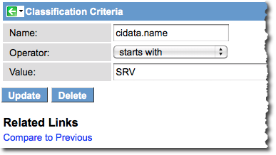
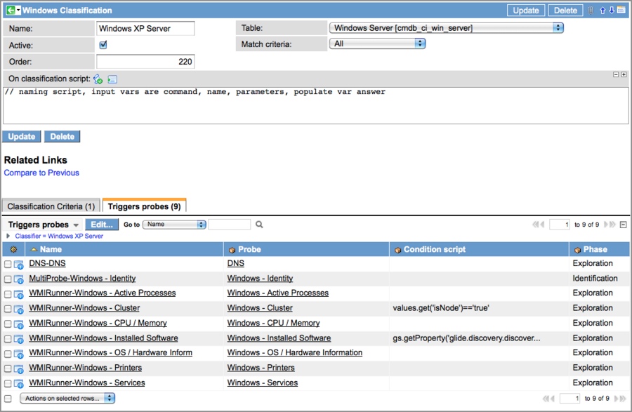

Device Classifications
| |
Note: This article applies to Fuji. For more current information, see Discovery Device Classification at http://docs.servicenow.com
The ServiceNow Wiki is no longer being updated. Please refer to http://docs.servicenow.com for the latest product documentation. |
Contents
1 Overview
After Discovery detects active devices in your network using a port scan (Shazzam probe), Discovery attempts to classify the devices so that it can gather additional information. Discovery launches classify probes that query devices to find out such things as operating system and version information. For information, see Data Collected by Discovery.
The following classify probes are included with the platform:
- UNIX - Classify: SSH commands for all UNIX operating systems. ServiceNow supports SSH protocol, version 2 only.
- SNMP - Classify: SNMP commands for all network devices, such as printers, routers, or UPS.
- Windows - Classify: WMI commands for all Windows machines
2 How Device Classification Works
When Discovery is initiated, the Shazzam probe is launched to detect open ports on devices in the network. The data returned is used by the Shazzam sensor to identify certain characteristics about these devices based on the activity known to exist on these ports. For example, UNIX-based operating systems communicate with the SSH protocol over port 22, and Windows communicates with the WMI protocol over port 135 or higher. Discovery makes certain assumptions about the devices, applications, and processes running on these ports and launches the appropriate classify probes to find out more. Classify sensors process the data returned from the probes and compare it with configured criteria for each class of device. At this point, classification varies, depending upon the type of scan selected and the version of ServiceNow being used.
Process classification occurs during the exploration phase of Discovery, after device classification. For more information, see Process Classifications.
3 Discoverable Windows Operating Systems
The out-of-box Discovery system provides separate classifiers for the following Windows server versions:
- Windows NT Server
- Windows 2000 Server
- Windows 2003 Server
- Windows 2008 Server
- Windows 2012 Server (Starting with the Dublin release)
- Windows Cluster VIP
The Windows classifier supports the following Windows workstation operating systems:
- Windows XP
- Windows Vista
- Windows 7
- Windows 8 (Starting with the Dublin release)
4 Classification
Device classification occurs only when a Discovery Schedule is configured to discover Configuration items. This scan type enables Discovery Identifiers and is the only scan that can be used to update the CMDB.
When Discovery has determined the device's class, it launches an identity probe - a multiprobe - that is configured to run one or more commands with a single authentication. The identity probe in the out-of-box system can be configured to ask the device for information such as its serial numbers (there can be more than one), name, and network identification. The results of this scan are processed by an identity sensor, which then passes the results to the Identifier. The Identifier then attempts to find a matching device in the CMDB. If the identifier finds a matching CI, the Identifier either updates that CI or does nothing. If the identifier cannot find a matching CI, it either creates a new CI or does nothing. If Discovery is configured to continue, the Identifier launches the exploration probes configured in the Classification record to gather additional information about the device. Exploration probes can be multiprobes or simple probes.
This diagram shows the processing flow for classifying and probing devices with Identifiers configured.
{kind=link}
4.1 IP Scan Mode
The IP Scan mode enables credential-less Discovery, which attempts to identify devices and software based on just the open ports and banners it finds. If the classification criteria are met for a device in the IP Scan mode, Discovery automatically updates the CI in the CMDB. After a device is properly classified, Discovery launches the exploration probes configured for that class of device and begins gathering detailed information about the CI. For example, in the default ServiceNow system, the Linux classification triggers eleven exploration probes that return information such as disk size, memory, and the number of current connections. The data from these probes returns at different times and is stored in the ECC Queue until processing is complete.
This diagram shows the processing flow for classifying and probing devices with Discovery IP Scan (no Identifiers):
{kind=link}
5 The Classification Form
Select Discovery Definition > CI Classification in the navigation pane and select the desired classification. ServiceNow includes classifications in the base platform that discover most common operating systems, network devices, and processes. ServiceNow provides the following fields for creating new device classifications or edit existing ones.
| Field | Input Value |
| Name | Name of the configuration item (CI) |
| Active | Enable or disable this classification. |
| Order | Configure the order (sequence) in which the platform run this classifier, |
| Table | Select the a table for this classification. For example, if this record classifies a Windows server, select the Windows Server [cmdb_ci_win_server] table. |
| Match Criteria | Select which criteria must match to classify this device - Any of the parameters or All of the parameters. |
| On classification script | This script runs if classification criteria are met. Use this script to perform any special tasks after a device is classified. It is possible to use the g_probe_parameters hashmap from within a classification script to set probe parameters for any configured, triggered probes. For example, this code sets a 'node_port' parameter to 16001 for all triggered probes.
(JS), g_probe_parameters['node_port'] = 16001; //
|
| Classification Criteria | These criteria are formed from specific parameters and the values that they must contain to match devices that Discovery finds in the network with CIs in the CMDB. For a detailed discussion of these parameters, see Discovery Classification Parameters. |
| Triggers probes | These are the exploration probes that Discovery launches to gather detailed information about a CI that it has classified in the network. |
A completed CI classification form with exploration probes defined is shown here. For instruction on creating probes, see Discovery Probes and Sensors. The probes defined here are launched when the device is properly classified, unless Discovery is configured to stop after classification.
{kind=link}
5.1 Classification Criteria
The classification criteria for a device classification includes a parameter, an operator, and a value. The available parameters are those returned by Discovery classify probes for each class of device found. The values configured for these parameters are the values that Discovery is looking for to establish a device's class. For available parameters for each default classification, see Discovery Classification Parameters. In this example from the base ServiceNow platform, the device to be classified has a name value that starts with Windows 2003.
{kind=link}
The On classification script field can be used to further customize the application record being created. The following objects are exposed for this purpose.
| Parameter | Description |
| isNode | Indicates if this instance is a node. |
| type | Returns the classification windows. |
| isVIP | Indicates if this CI is a virtual machine, with a virtual IP address. |
| ip_address | Returns the IP address of the device being discovered. |
| name | Name of the Windows version, such as Windows 2003 Standard. |
6 Reclassifying a Windows Workstation Machine as a Server
By default, Discovery automatically classifies computers using certain Windows operating systems as workstations. (See Discoverable Windows Operating Systems for details.) However, some organizations might want specific computers in their network that are acting as servers to be classified by their function and not their operating system. Use the following variables, preceded by cidata., to construct a reclassification condition. For example, to reclassify based on a machine's IP address, use cidata.ip_address.
- name
- dsn_domain
- os_domain
- ip_address
- serial_number
The following procedure reclassifies any Windows workstation operating system (Windows Vista, XP, or Windows 7) that is acting as a server.
- Navigate to Discovery Definition > CI Classification > Windows.
- Create a new classification record, such as Windows XP Server.
- Select Windows Server [cmdb_ci_win_server] as the table.
- Right-click in the header bar and select Save from the context menu.
- The Classification Criteria and Triggers Probes Related Lists appear.
- Configure the following Classification Criteria:
- Name: Select a variable to use as the classification criteria from the list above. For example, to reclassify a machine by name, enter cidata.name. This works for servers that have a uniform naming convention, such as SRV001, SRV002, etc., regardless of operating system.
- Operator: Select an operator for the classification condition. In networks containing servers named with a specific convention, you might select starts with or contains.
- Value: Enter the value for the condition. In our example of a network with a server naming convention, this value would be the root of that convention, such as SRV.
- This condition will classify all computers as servers if their machine name is SRVXXX.
- 
- Select the Triggers Probe Related List and add the appropriate probes.
- a. Copy the list of probes from another Windows server classification, including the Condition scripts.
- b. Ensure that the Windows - Identity probe has a phase of Identification (the default is Exploration).
- The completed form looks like this:
- 
{kind=link}
{kind=link}
7 Debugging Classifications
To log debugging information about classifications, add the following system property. The resulting log entries list the name of each classifier that runs, along with all the names and values that are available to the criteria in the classifier.
| System Property | Description |
|---|---|
| glide.discovery.debug.classification | Enables debugging information for process classification.
|
8 Enhancements
8.1 Fuji
The Generic Host SNMP classifier is removed from Discovery.
The following SNMP classifiers are deactivated:
- Windows XP
- Windows Vista
- Windows 2000
- Windows 2003 Standard
- Windows 2003 Enterprise
- Windows
- Linux
- Solaris
- HP-UX
- AIX
- Mac OS X
| |
Note: These systems continue to be discovered through other categories of classifiers, such as the UNIX or Windows Classifiers. |
For a list of active SNMP classifiers, navigate to Discovery Definition > CI Classification > SNMP.
8.2 Dublin
- Offers discovery support for new Windows Operating Systems.